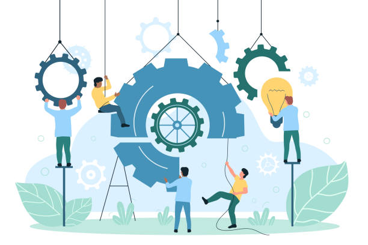

The purpose of this project is to provide valuable insights for businesses by ingesting and
transforming loan and loan repayment history data.
Utilizing Azure Data Factory and Databricks, this solution processes JSON files stored in Azure
Blob Storage to deliver accurate and timely reporting. The tools used include Azure Data Factory,
Databricks, and Delta Lake, ensuring a robust framework for data analytics.
The purpose of this project is to ingest, cleanse, and transform data from multiple sources using Azure Data Factory. The transformed data will be optimized for business analytics and reporting
, ensuring consistency and accuracy for better decision-making across the organization.
The Integrated-Data-Lifestyle-Management project integrates diverse data sources across a multi-cloud environment, ensuring real-time data availability and enhancing application
performance to support online operations and enable efficient, data-driven decision-making.
The purpose of the DataStream Telecom Data Warehouse project is to address the challenges of fragmented data sources within Telecom by creating a centralized data warehouse using Teradata. This project aims to automate data ingestion and transformation processes, improve reporting accuracy, and facilitate efficient
decision-making through enhanced data accessibility and a unified view of business metrics.

The purpose of this client-server chat system project is to establish real-time communication between a client and a server using socket programming. It aims to demonstrate efficient message exchange, enable seamless interaction, and provide a foundational framework that can
be expanded for use cases like customer support, multiplayer games, or collaborative tools.
{kind=link}
{kind=link}
{kind=link}